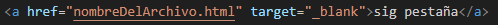

Las etiquetas de enlace nos permite mostrar imagenes, videos y audios en nuestra pagina ademas poder dirigirnos a otras paginas.
La etiqueta img nos ayudara a mostrar una imagen en nuestra página.

El atributo src es una abrebiación de la palabra source que significa fuente
La etiqueta img tiene el atributo src en el que pondremos la ruta de la imágen que queramos usar, podemos usar imagenes de internet o los que tengamos guardado.
Si queremos usar una imagen de internet solo devemos copiar el enlace de este, pero devemos asegurarnos que el final del enlace termine con la exteción de una imagen como .jpg o .png y si no tiene esta extención la imagen no se mostrara.

Para mostrar una imagen que se encuentra alojada en nuesto pc, sencillamente tendremos que poner el nombre de la imagen.

Pero si nuestra imagen esta guardad dentro de un carpeta diferente, primero pondremos el nombre de la carpeta luego un / seguido del nombre de la imagen.

La etiqueta para mostrar el video es una etique que tiene un etique ta cierre.
Al igual que la etiqueta de imagen, en este tambien podes usar videos de internet que tengan la extencion de un video, ademas tiene un atributo mas que es controls que permite que nuestro video tenga controles de un video como ponerle play, aumentar el volumen y agradar la pantalla, y si la etique no cuenta con este atrivuto el video no se podra reproducir.
la etiqueta de audio funciona del mismo modo que el de video.
Aqui tambien podras poner archivos con ruta de un video y solo se mostrar el audio de este.
Con esta etiqueta podremos redirigirnos ha otras paginas al darle click.
La etiqueta a y su atributo href que tiene la misma funcion que el src pero en este pondremos el enlaces de alguna pagina al que nos queramos dirigir, y devemos agregar un texto entre la etiqueta inicial y final, de esa manera ese texto sera el enlace que al precionar se abrira la pagina del enlace y si no tiene ningun texto no se mostrar ningun enlace.
Tambien podemos abrir nuestras páginas poniendo el nombre del archivo.

Para que el enlace se abra en una pestaña distinta del navegador, usaremos el siguiente atributo.
El atributo target y su dato _blank permite que el enlace se ejecute en una pestaña distinta.